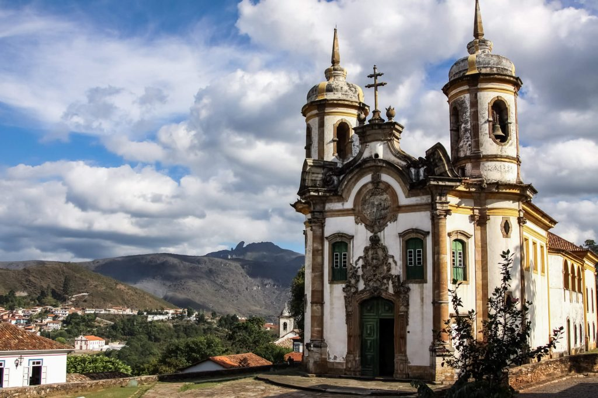
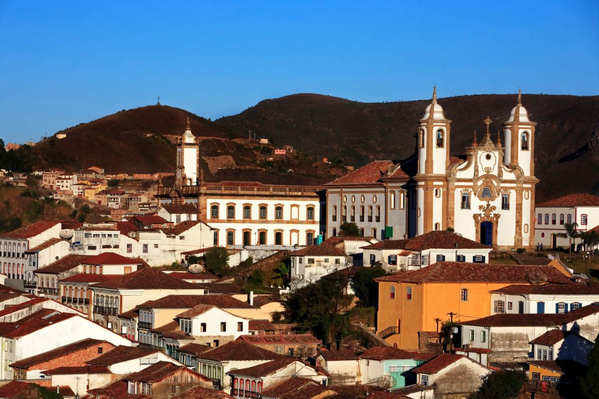
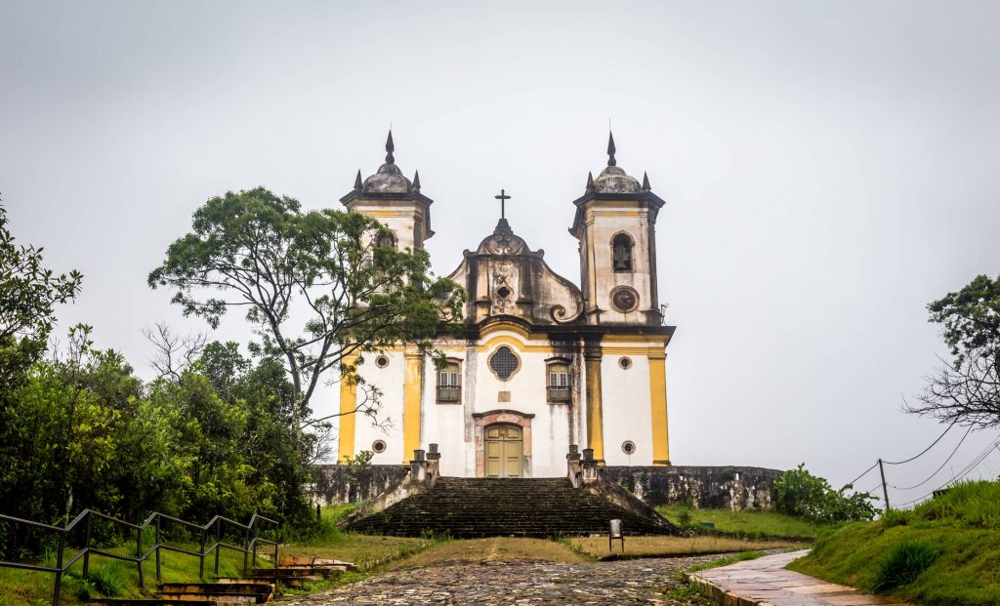

Igreja São Francisco de Assis
A Igreja São Francisco de Assis é uma das mais importantes obras coloniais da história do Brasil. Sua construção tem início em 1765 e conclusão em 1771, com projeto de Aleijadinho. É apenas em 1890 que os ladrilhos dos altares laterais e corredores ficam prontos.
Hoje, a igreja São Francisco de Assis, em Ouro Preto, é tombada pelo Instituto do Patrimônio Histórico e Artístico Nacional (IPHAN) e classificada como uma das sete maravilhas de origem portuguesa no mundo.

Igreja Nossa Senhora do Carmo
A Igreja Nossa Senhora do Carmo teve seu projeto inicial feito pelo pai de Aleijadinho, o arquiteto e carpinteiro português Manuel Francisco Lisboa. A obra tem início em 1756 e só é concluída em 1780.
Outros diferenciais da igreja são os dois sinos nas torres laterais, o dourado presente na fachada e em seu interior, além da presença de dez painéis em azulejo português. Dentre as igrejas da cidade, a de Nossa Senhora do Carmo tem menos elementos em ouro e menos ostentação, característica do rococó. Ao lado da igreja fica o Museu do Oratório, onde antes funcionava a casa de noviciado, local onde Aleijadinho passou seus últimos seis anos de vida

"Igreja São Francisco de Paula
É possível ver a Igreja São Francisco de Paula de diversos pontos da cidade, já que ela fica no alto, entre as montanhas. Sua construção tem início em 1804 e conclusão em meados de 1898, e é uma das mais simples dentre as igrejas de Ouro Preto. Em seu interior, é possível encontrar uma imagem de Aleijadinho. Essa foi a última igreja do período colonial a ser construída na cidade.
